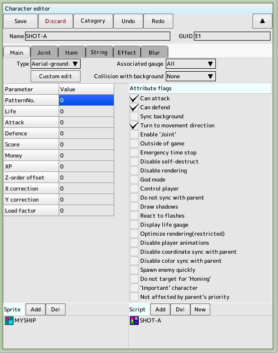
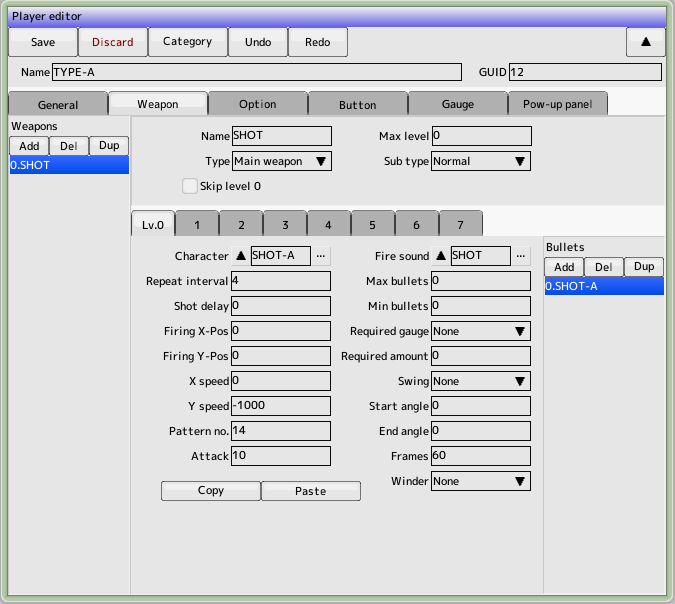
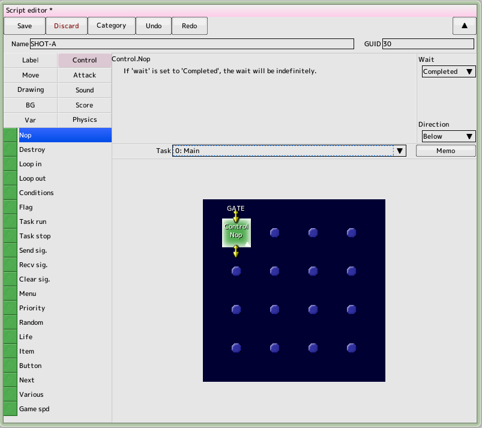
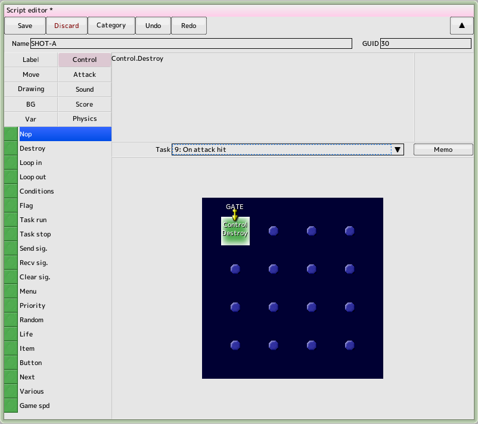
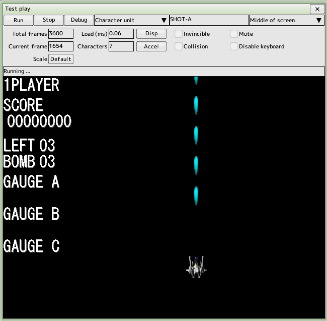

back to the original page
back to the original page
3. Create player bullets
There are two parts needed for a bullet: the character and the script.
Keep the project file created in the previous tutorial open

Creating a character for a bullet
Create a new character and name it 'SHOT-A'
Type... Aerial-ground attack
Attribute flags... Check as shown in the diagram to the right
Sprite... Add the previously created 'MYSHIP'
Script... Click the New button to create it (it will be added to the list automatically)
Pattern numbers and attack power are not needed here as they are set in the Weapons section of the player edit

Add bullets to the player
Open the previously created player 'TYPE-A' and edit the weapon settings tab
Create one new weapon by clicking the Add Weapon List button
Name the weapon 'SHOT', maximum level 0 (no power-up)
Click on the Lv.0 tab and click the Add Bullet List button
Character...' Select 'SHOT-A'
Repeat Weight ..... .4
Movement speed Y... -1000
Pattern number..... .14
Attack Power..... .10

Add the script to the bullets
Open the script 'SHOT-A' created earlier
Select the task "0: Main"
Drag and drop the "Passage Panel" from the control group to the control field
Select a passing panel and wait for the item to complete its operation
Now there will be a script that goes straight to nothing
The initial speed is set automatically at the time of firing from the player

Script editing continues
Select the task "9: Attack Hits"
Right-click on the control field to bring up the menu and select "Create Gate"
If "GATE" appears in the top left corner, proceed to the next
Drag and drop the "Disappearing Panel" from the control group to the control field
The task "9: Attack Hit" is activated when a bullet hits an enemy
Extinguish bullets upon impact

Test Run
When done, run a test and make sure that the bullets can be fired with the Z key
Back to top of page